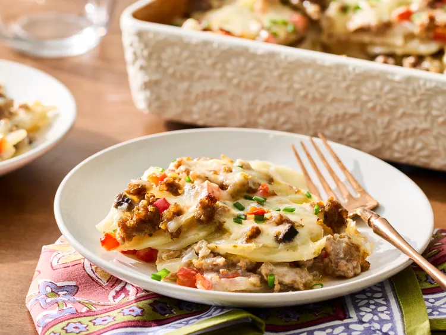

Sausage Potato Casserole

This sausage potato casserole is a great family friendly mid-week meal that requires little preparation.
Ingredients
- 3 large russet potatoes, peeled and sliced 1/8-inch thick
- 1 pound bulk mild Italian sausage
- 1/2 cup chopped onion
- 1/2 cup chopped red sweet pepper
- 1 (10.75-ounce) can condensed cream of mushroom soup
- 3/4 cup milk
- 2 cups shredded pepper Jack cheese
- 1/2 teaspoon freshly ground black pepper
- finely chopped chives
Directions
- Gather all ingredients.
- Preheat the oven to 350 degrees F (175 degrees C). Lightly grease a 2-quart baking dish.
- Cook sliced potatoes in a large saucepan of lightly salted, boiling water for 5 minutes. Drain.
- Meanwhile, cook sausage, in a 10-inch skillet over medium heat until no longer pink, breaking it into crumbles. Add onion and peppers; cook about 3 minutes more or until just beginning to soften; drain sausage mixture and set aside.
- Whisk together soup and milk in a medium bowl. Stir in 3/4 cup of the cheese and black pepper.
- Layer half the potatoes, soup mixture, and sausage mixture in the prepared dish. Repeat layers.
- Cover and bake until potatoes are tender, 45 to 50 minutes. Sprinkle with remaining 1 1/4 cups cheese. Bake, uncovered, until cheese is melted, 10 minutes.
- Let stand 15 minutes before serving. Garnish with chives.
Home